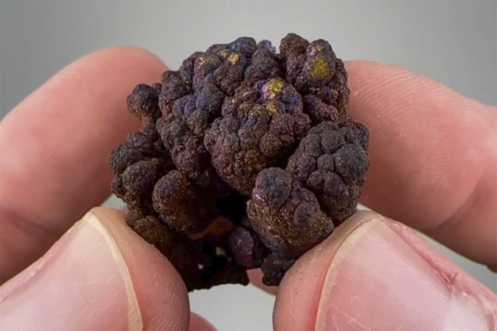

Chalcopyrite
"Iridescent Blister Copper TN"
II-10571
410.0-980 level, Footwall contacat
Unassigned
ex Robert L. Fox collection
Purchased 6/22/2026 from Persson Rare Minerals for $132.74
Core Collection • In Collection
Details
Storage Type: Drawer
Storage Location: C2D1 Small Wonders
Size class: Cabinet (0)
Dimensions: Unrecorded
Mass: Unrecorded
Luster: Unrecorded